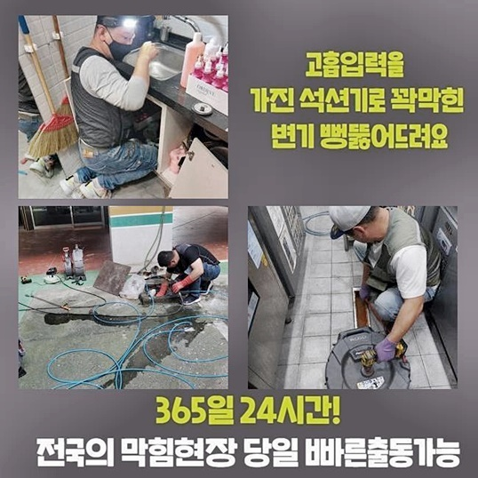
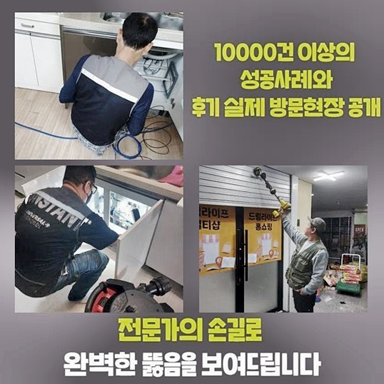
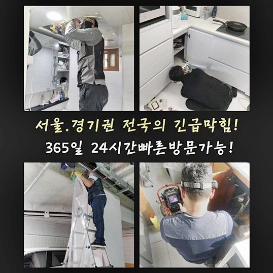
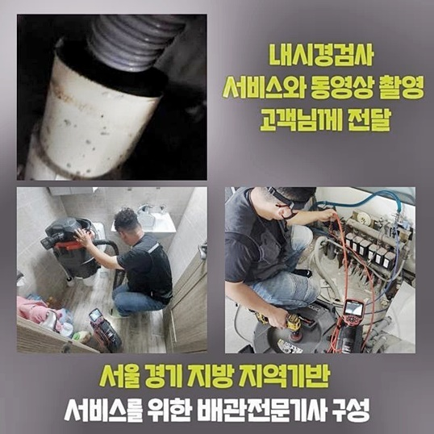
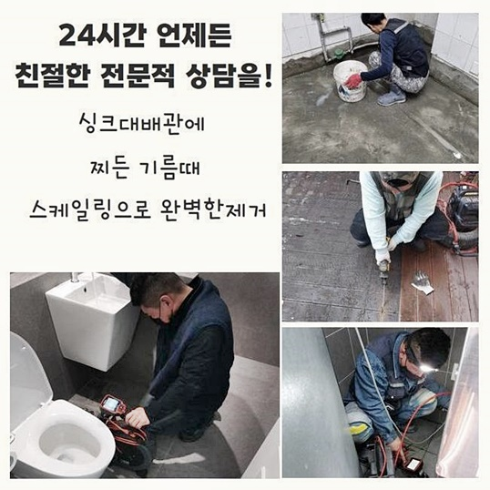
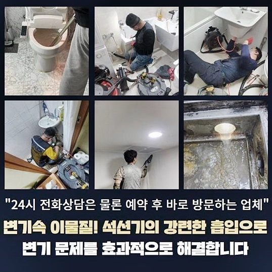
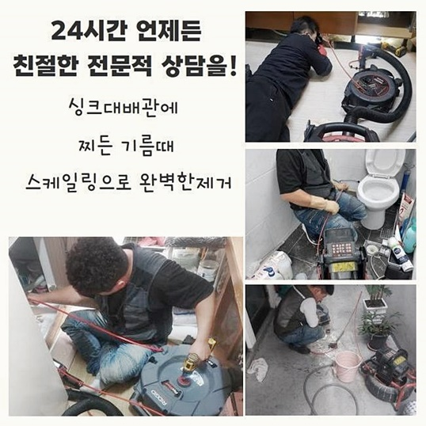

🏠 부천 원종동하수구막힘 오정동 하수구뚫어주는곳 배관전문
용인 하수구막힘 전문 시공 후기

📋 작업 개요
- 위치: 용인
- 서비스 유형: 하수구막힘, 배관막힘, 뚫는업체, 배관청소, 고압세척, 설비공사, 배관보수, 악취차단
- 작업 일시: 2024. 8. 29. 10:37
- 업체명: 하수구수사대 (010-5615-2118)
🔍 문제 상황
부천 원종동하수구막힘 오정동 하수구뚫어주는곳 배관전문
다수의 세대가 함께 주거하고 있다면 여러가지 사연으로 불현듯 하수구 중단이 생깁니다
이번에 갔던 작업지는 어느 다가구 주택이었습니다 가장 저층의 집에서 하수구가 차단돼서 고충이 이만저만이 아닌 상태라고 보였습니다
하수가 정상 배출되지 않고 울컥대면서 위로 치솟는다면 가장 밑에 위치특정 가정에만 오류가 터질 수 있어요
이처럼 오류가 생기는 이유를 추론해 보자면 배수관이 유지하고 있는 모양으로 인한 것입니다
수돗물을 운반하는 작업이 원활하게 형성되도록 하려면 모든 가정으로 가는 수로와 중앙 하수관이 동일한 이동경로로 합류됩니다
대부분의 배관 수로들은 모두 연계되어 있으므로 이물질이 어떤 깊이에서 껴서 멈추고 에러가 형성되는 상황 속에서는 하나의 호수에만 문제가 외관상 보이지 않고 건물 내의 여러 곳들에서 한꺼번에 여러 장소에서 큰 문제가 되어버리기도 해요
오염수의 역행 등등 실시간으로 점점 악화되는 배관으로 인해 제일 밑 층에서 손해를 엄청나게 크게 입고 힘들어하셨네요
건물을 유지보수하시던 관리 책임자가 빌딩의 파이프가 막힌 상황이라고 빨리 고쳐달라고 간곡히 부탁하셨어요
통수가 순탄하게 형성되지 않았기에 건물의 모든 거주자에게 난감함이 전달되고 있는 상태라고 보였습니다
대강 피해사례를 들었던 자료를 토대로 출동 전 시뮬레이션을 돌려봤고 도구나 기기를 빠짐없이 챙기고 보수해 드리려 이동했어요

🔎 원인 분석
💡 전문가 진단: 정밀 진단 장비를 사용하여 슬러지의 고착 여부를 판명하고 타격/세척 작업을 실시했습니다.
건물의 하수곤란이 생기는 것은 24시간 중 언제라도 단독이건 다중주택이건 직면할 수 있는 문제입니다
그렇기에 평상시에 하수구와 관련된 정보에 대하여 배우려는 자세로 고장이 당장 생겼을 때 신속하게 조치할 수 있을만한 기본지식 쯤은 익혀두는 편이 좋을 것입니다
많은 설비관련 사안을 고쳐오면서 설비가 노후되고 약화됐다해도 문제점을 날카롭게 꼬집어내어 철두철미하게 보완해드리니 언제든 얼른 전화를 걸어주세요
작업지에 도착하고 나면 최우선적인 순위로 두는 작업은 사태의 심각도와 문제점을 진중하게 관측합니다
연락을 이미 받긴 했지만 전문가의 해석으로 보면 같은 상황이라 하더라도 추가적 문제까지 꼬집어낼 수 있기에 시작 단계에서 잘 봐야합니다
즉시 돌입하는 것보다 속사정을 속속들이 알아야 업무의 정교한 수준도 상승되기 때문입니다
분명히 특정 문제점을 안고 있을 장소의 곳곳을 보며 단번에 여러가지 하수적 문제를 속전속결로 처리할 수 있는 해결책을 물색해 봐요
우선 중앙 관로부터 관찰하면서 문제가 생긴 실마리를 찾아가 보았습니다!
최종적으로 사용하고 폐기된 하수가 명쾌하게 배출되지 못했던 것은 많은 종류의 이물질들이 합체한 덩어리가 통로를 가득 봉쇄하며 방해물로 작용하고 있었어요
이런 사정으로 물을 조금씩 흘려보내도 겉으로 치솟으면서 중앙 배관로와 가장 가까운 거리에 놓여있는 가장 밑에 위치한 세대에서 울컥거리며 치솟는 일들이 쉽게 촉발된 것입니다
하수구 설비를 담당해 오며 여러 작업지에서 까다로운 막힘들을 수습해온 성공 사례들이 밑거름이 됐기에 이러한 유연한 사고를 통해서 문제를 만든 원인과 해결책을 도출해낼 최상의 방안을 계획에 넣을 수 있어요
건물에 설치된 하수로로 물을 폐기하는 중에 여러 작은 찌꺼기들도 함께 휩쓸려갑니다

🔧 작업 과정
침전된 규모가 커지면서 하수구를 망가뜨렸다고 짐작할 수 있었습니다
막힌 통로를 뚫어내는 단계를 통해 근원적인 씨앗을 소거시키는 것이 중대한 과제였습니다
이처럼 사유를 명확하게 인식해내는 부분이 성패를 결정한다고 해도 과언이 아니니 배관을 관측하는 카메라를 주입해서 내부 탐사 과정을 진행시켜 나갔습니다
내시경이라고 하면 보통은 의사분들이 쓰시는 생각하시는 경우가 많은데 배수로의 전용으로 시장에 나온 기기랍니다
파이프는 매우 길이가 길어서 눈으로 들여다 보는 방법으로는 깊숙한 깊이에 달하기 까지는 보기가 어려운 형상을 보유하고 있으니 배수 시스템 깊이까지도 도달이 되는 지원책이 필요합니다
설비에 맞춰서 나온 기기의 중대성은 시공을 이어갈 하수구 벽을 상처입히지 않는 선에서 차질 없이 문제를 나아갈 수 있도록 돕기 때문이죠!
너무 강하기만 한 세기나 기기의 가동은 하수구에 오히려 타격을 가해버려서 배수 장치의 토탈 교체라는 오래 소요되는 공사를 부릅니다
오물들의 세부 사항과 이물의 치수와 형태를 모두 알아냈다면 작업 노선을 정하는 데에 든든한 발판이 됩니다
소중한 설비시설을 내맡기는 만큼 오랜 업력으로 빚어진 노하우를 지니고 있으며 자세하게 수행할 때 필요한 장치 보유 여부를 하나하나 짚어보시고 선정하시면 결과물이 좋을 겁니다
많은 장소의 관로가 똑같은 꼴로 설립된 것이 아니고 노후화 정도나 종류부터가 다 다르고 어려운 경우도 많아요
그렇기 때문에 보이지 않는 관로의 탐방을 하는 상황에는 다구간을 타겟팅해서 스캔해야 하며 한 포인트에서 오류인자가 부각된다 해도 이 부분 이외에도 연결된 전체 배수관을 지속적으로 관찰해야 합니다
이슈가 발생한 곳을 알아차렸다면 관로 속으로 어떠한 도구의 지원을 받아서 깔끔하게 세척해 줄 것인지 밑그림을 그려봐야 합니다
이물을 제거하기 위해 활용되는 기계는 다양하기 때문에 상황에 맞춤으로 다뤄야 안에 고인 답답한 상태를 뚫고서 정상화 시킬 수 있어요
이를 통해 알아차린 제일 악화된 지점을 골라서 방해 요소를 걷어올리려는 목적으로 물대포를 분사하는 세척 방식으로 업무를 해나갔습니다
딱딱하게 말라붙은 고착물이 있는 지점이 감지되면 능률이 엄청난 샤프트 장치로 가동하여 해결을 보는데요
이 장비는 내부를 따라서 상당한 사이즈로 불어난 딱딱한 오물들을 잘게 쪼개주고 흡입하여 제거하는 방식으로 철저하게 세정을 돕습니다
이렇게 이물을 제거한 후 고압수를 화끈하게 쏴서 더러웠던 배수구의 속을 쾌적하게 정비해 나가요
잔여물이 전혀 없어야만 추후 하수관에 또 다른 슬러지가 다시 탄생하지 않을 쾌적함이 형성되는 것입니다


✅ 작업 완료
흡수력이 좋은 석션기로 믹서기처럼 갈려버린 조각들을 한 조각이라도 빠지지 않도록 빼내 주었습니다
잔해물로 인하여 배관이 또 막히면 허용될 수 없는 문제이므로 과정 내도록 내시경을 동반하여 주입해서 남아있는 분량이 없을 때까지 업무를 진행했습니다
하수도는 여러군데에서 폐기된 찌꺼기들이 합류하는 기점이니 항상 신경써서 깔끔히 유지해야 합니다
노폐물을 정례적으로 제거하여 때때로 청소도 해준다면 세대들이 피해를 보지 않고 정상적인 하수시스템을 유지할 수 있습니다
하수구의 뜬금없는 고장으로 자주 스트레스를 받으신다면 책임지고 고쳐드릴 준비가 되어있으니 현재 상황을 설명해 주세요!




⚠️ 하수구 배관 막힘 예방 및 관리 가이드
- ✅ 머리카락, 비닐, 물티슈 등 물에 분해되지 않는 이물질은 하수구 유입을 절대 금지해 주세요.
- ✅ 하수구 거름망을 씌우고 모여진 이물질은 주기적으로 쓰레기통에 바로 비워주셔야 합니다.
- ✅ 배관 노후가 심할 경우 이물질이 더 쉽게 걸리므로 주기적인 배관 세척(고압세척 등)을 권장합니다.
- ✅ 작업 후 1년 이내 재발 시 하수구수사대에서 무상 A/S 보증 서비스를 제공합니다.
💡 핵심 정리
- 확실한 장비 작업(내시경 점검 및 샤프트 스케일링)으로 원인을 뿌리 뽑습니다.
- 작업 후 1년 이내에 동일한 부위 재발 시 100% 무상 A/S 서비스를 보장합니다.
- 서울 · 경기 · 인천 전 지역에 24시간 언제든 긴급 출동할 수 있도록 항시 대기 중입니다.
❓ 자주 묻는 질문 (FAQ)
🚨 용인 하수구막힘 문제로 고민이신가요?
정확한 원인 진단과 확실한 시공으로 재발 없는 해결을 약속드립니다.
24시간 긴급 출동 | 서울 · 경기 · 인천 전지역 | 1년 내 재발 시 무상 A/S